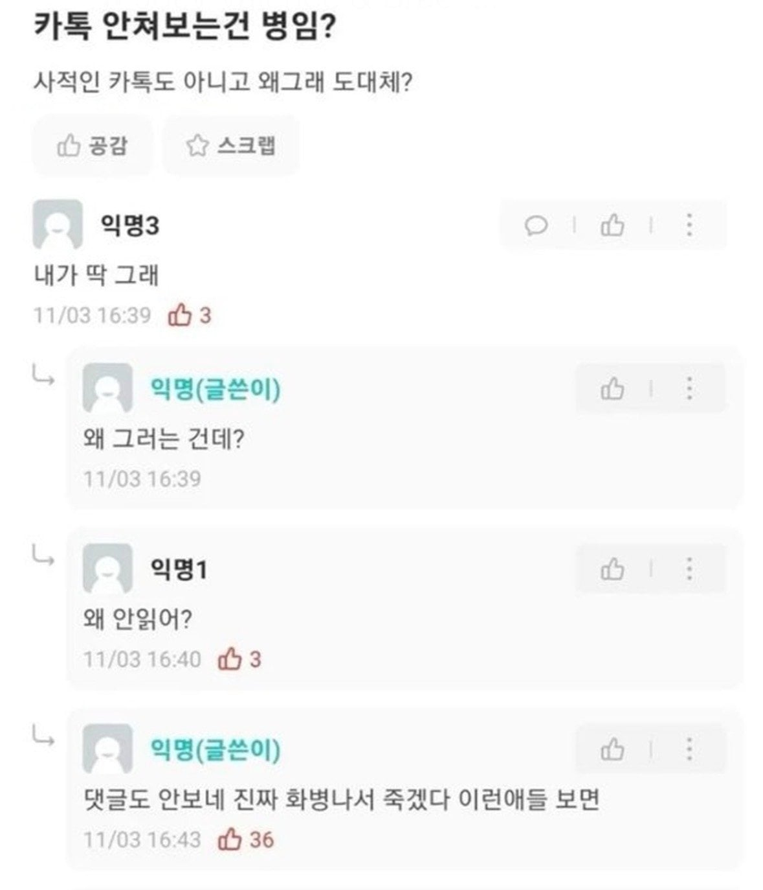

카톡 안쳐보는건 병임??
댓글
ㅋㅋㅋㅋㅋㅋㅋㅋㅋ
안 읽어도 아쉽지 않은 사람것만 안 읽는것
진짜 이거임 ㅋ 회사 연락은 잘받음 ㅋㅋㅋ
그러고 나중에 연락안하면 서운하다 한다
저런 새끼들 꼭 진짜 중요한 사람 카톡은 읽는다 ㅅㅂ
전화를해 ㅋㅋㅋ 사적인것도 아니면 전화해 ㅋㅋ
저런애들 전화도 안받음
??: 전화는 너무 무례해요
이성카톡은 기똥차게 보더라
ㅋㅋㅋㅋㅋ
나도 저럼 ㅋㅋ
왜 그러는 건데?
솔직히 본인카톡이 우선순위에서 밀렸다고 봐야..
진짜 카톡 999쌓여있는 사람 개신기함 ㅋㅋ
;;;
아 그건 단톡방이 너무 많아서 그래.... 무음한 단톡방만 7개야... 진짜 뭐 잠깐 모임이나 협업 하나만 해도 단톡을 만들어 왜
요즘 카톡 알람 고장났냐? 왜 배너 안뜨다가 카톡 들어가면 몇십개씩 와있고 그런거냐 알람을 끈것도 아닌데 존나 불편
그거 지랄나서 나도 지웠다 다시 깔았음
알람 안왔는데 카톡 들어가보면 와있음
어 나도 한동안 그랬는데 어느순간 고쳐졌네
요즘 카톡으로 말을 걸어도 물어도 스루하는 애들 있길래 걍 말을 덜하는 중... 이렇게 늙어가는 거겠지...
지한테 관심없는 사람이면 잘 안보게 되어있음 ㅋㅋ
카톡 알림꺼놨어
대부분 istp가 그러더라
난 1이 사라지지않으면 죽는병에 걸렸는데
명작
고아새기들이라 그럼
급하면 전화하겠지
예의가 없는거지